Week 04 — Online · AI × Industrial Design
AI PRODUCT
FILM
From Product Experience to Visual Storytelling
완성된 제품 디자인에 사용자와 상황, 움직임을 더해
하나의 이야기를 전달합니다.
심선범 · Higgsfield Live Session · 180 min
PART 01 — Storyboard & Reference Setup
마지막 단계
FROM CONCEPT TO EXPERIENCE

WEEK 01
IDEA → CONCEPT

WEEK 02
REVIEW → REFINE
WEEK 03
CMF → DETAIL → VISUALIZATION

WEEK 04
SCENARIO → STORYBOARD → FILM
지금까지 제품을 디자인했습니다.
이제 제품의 사용 경험을 시각적으로 전달합니다.
2
PART 01 — Storyboard & Reference Setup
스토리보드에서 시작한다
START WITH THE STORYBOARD
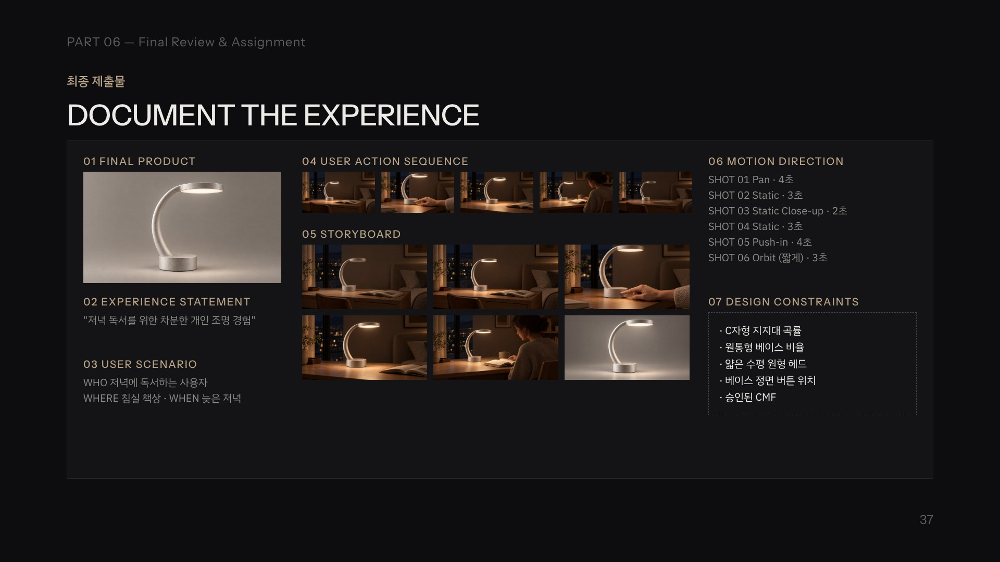
01 FINAL PRODUCT
3주차 최종 제품 이미지
02 USER SCENARIO
사용자와 사용 환경
03 ACTION SEQUENCE
사용자 행동과 제품 반응
04 STORYBOARD
5~6컷 장면 구성
05 MOTION DIRECTION
카메라·사용자·제품 움직임
06 DESIGN CONSTRAINTS
변경하면 안 되는 제품 특징
영상을 생성하기 전에 어떤 이야기를 전달할지 이미 결정되어 있어야 합니다.
3
PART 01 — Storyboard & Reference Setup
스토리보드 → 이미지 → 영상
STORYBOARD → IMAGE → VIDEO
STEP 01
스토리보드 확인
STEP 02
장면별 이미지 생성
STEP 03
이미지 기반 영상 생성
STEP 04
결과 검토 및 수정
STEP 05
클립 연결
STEP 06
최종 영상 완성


한 번에 전체 영상을 생성하기보다 장면별로 제작하고 연결합니다.
4
PART 01 — Storyboard & Reference Setup
영상에서 지킬 조건을 정한다
KEEP THE PRODUCT CONSISTENT
01
제품 실루엣 · 지지대 곡률 · 베이스 비율
02
조명 헤드 두께 · CMF · 조작부 위치 · 사용 방식
램프 예시
KEEP
Original C-shaped support, cylindrical base, circular head
CHANGE
Camera movement or lighting state
CONSTRAINT
No geometry changes, no invented components
강사 질문
"카메라가 움직이는 동안 제품의 형태까지 달라지면 같은 제품이라고 할 수 있을까요?"
5
Practice 01
Video Reference Setup
컷마다 쓸 이미지와 움직임을 정리합니다.
작성 절차
1. 최종 Hero Image 준비
2. 4주차 오프라인 Storyboard 준비
3. 컷별 필요한 이미지 확인
4. 컷별 움직임 확인
5. Design Constraints 작성
6. 영상 제작 순서 결정
제출물
Video Reference Set
완료 기준
각 컷에 어떤 이미지를 사용하고
어떤 움직임을 구현할지
정리되어 있어야 합니다.
6
PART 02 — Scene Visualization
좋은 영상은 좋은 이미지에서 시작한다
A GOOD VIDEO STARTS WITH A GOOD IMAGE
01
제품의 형태
02
사용자와 제품의 위치
03
배경과 공간
04
카메라 시점
05
조명 상태
06
장면의 목적
HIGGSFIELD 공통 이미지 지침
Use the uploaded product image as the
primary and authoritative design reference.
This is an existing industrial design concept
developed during previous design sessions.
Do not create a new lamp design.
Preserve the original product identity:
- Low, wide cylindrical base
- One continuous C-shaped curved support
- Thin horizontal circular disc-shaped lamp head
- Warm diffused light beneath the head
- Original product proportions and silhouette
- Approved CMF and product details
Only change the environment,
camera composition, user interaction,
or presentation elements
explicitly requested in the task.
Do not redesign the product.
Do not add new buttons, charging ports,
mechanical joints, or decorative components.
Maintain the same product identity
across all generated images.
No text, no labels, no logos.
시작 이미지에 문제가 있으면 영상에서도 그 문제가 이어질 수 있습니다.
7
PART 02 — Scene Visualization
SHOT 01 · 사용 환경
ESTABLISH THE CONTEXT
IMAGE PROMPT — CONTEXT
입력: 3주차 최종 램프 이미지
Create a cinematic wide shot
of a quiet modern bedroom at night.
A minimal wooden desk,
an open book,
soft low ambient lighting.
Place the exact lamp
from the uploaded product reference
on the desk.
Preserve the original product geometry,
CMF, and approved details.
The lamp is switched off.
Realistic interior photography.
Do not redesign the lamp.
No text or labels.
첫 번째 장면은 사용 환경과 분위기를 보여줍니다. 램프 예시: 늦은 저녁, 조용한 침실의 책상.
8
PART 02 — Scene Visualization
SHOT 02 · 제품 등장
INTRODUCE THE PRODUCT
IMAGE PROMPT — PRODUCT
Create a cinematic medium shot
of the exact lamp
from the uploaded reference.
Place the lamp on the same wooden desk
in the same quiet bedroom.
Preserve the C-shaped support,
cylindrical base,
thin circular lamp head,
approved CMF and details.
Show the complete product silhouette.
Soft evening interior lighting.
Do not redesign the product.
실루엣 · 소재와 마감 · 제품의 위치 · 사용 환경과의 관계
9
PART 02 — Scene Visualization
SHOT 03 · 사용자 조작
SHOW THE USER ACTION
IMAGE PROMPT — INTERACTION
입력: 최종 램프 이미지 + 조작부 스케치
Create a realistic cinematic close-up
of a human hand approaching
the approved power control
on the existing lamp.
Use the uploaded product image
and interface sketch as references.
Preserve the exact lamp geometry,
CMF, and approved details.
Show a natural hand position
and realistic product interaction.
Do not invent new controls.
No text or labels.
사용자의 손이 전원 조작부에 접근하는 장면. 조작부의 위치와 형태는 3주차 확정 설계를 사용합니다.
10
PART 02 — Scene Visualization
SHOT 04 · 제품 반응
SHOW THE PRODUCT RESPONSE
IMAGE PROMPT — RESPONSE
Create a cinematic close-up
of the exact lamp
from the uploaded reference.
The lamp is switched on,
emitting a soft warm light
onto the desk surface.
Preserve the original geometry,
CMF, proportions, and details.
Show realistic light diffusion.
Do not redesign the product.
전원 조작 후 조명이 켜지는 장면.
11
PART 02 — Scene Visualization
SHOT 05 · 사용 경험
SHOW THE BENEFIT
IMAGE PROMPT — EXPERIENCE
Create a cinematic medium shot
of a person reading a book
at a minimal wooden desk at night.
Place the exact lamp
from the uploaded reference
beside the book.
The lamp emits soft warm light
onto the reading area.
Preserve the original product geometry,
CMF, and approved details.
Calm atmosphere,
realistic interior photography.
Do not redesign the lamp.
따뜻한 조명 아래에서 책을 읽는 사용자.
12
PART 02 — Scene Visualization
SHOT 06 · 대표 장면
END WITH THE PRODUCT
IMAGE PROMPT — HERO
Create a premium cinematic hero shot
of the exact lamp
from the uploaded product reference.
Preserve the original C-shaped support,
cylindrical base,
thin horizontal circular lamp head,
approved CMF and details.
Refined three-quarter camera angle,
soft studio lighting,
subtle rim light,
neutral warm gray background.
Show the full product silhouette.
Do not redesign the lamp.
No text or branding.
전체 실루엣 · 주요 디자인 특징 · 소재와 마감 · 제품의 완성도
13
Practice 02
Scene Images
스토리보드의 각 컷을 시작 이미지로 만듭니다.
작성 절차
1. 스토리보드 5~6컷 확인
2. 컷별 기준 이미지 선정
3. 필요한 장면 이미지 생성
4. 제품 형태와 CMF 검토
5. 사용자와 제품의 위치 확인
6. 불일치한 장면 수정
제출물
Scene Image Set
완료 기준
장면이 달라져도
동일한 제품이 사용되고
있어야 합니다.
14
PART 03 — Image-to-Video
정지 이미지에서 움직임으로
IMAGE → MOTION
→
START IMAGE
정지 이미지
VIDEO CLIP
시간에 따른 변화
움직일 수 있는 요소 · 카메라 · 사용자 · 제품 · 조명 · 배경
HIGGSFIELD 공통 영상 지침
Animate the uploaded reference image
while preserving the exact product design.
Maintain the original product geometry,
proportions, materials,
and approved details.
Do not morph, deform,
or redesign the product.
Do not add or remove components.
Only animate the camera movement,
user interaction,
or product state change
specified in the current task.
Keep the motion smooth,
realistic, and controlled.
Preserve visual consistency
throughout the entire clip.
움직임을 추가하더라도 제품의 디자인은 유지해야 합니다.
15
PART 03 — Image-to-Video
무엇이 움직여야 하는가
WHAT SHOULD MOVE?
CAMERA MOTION
카메라가 움직이고 제품은 정지
Camera — 제품을 향해 천천히 접근
PRODUCT MOTION
제품 자체가 움직임
— (이 램프에는 움직이는 기능이 없음)
USER MOTION
사용자가 제품을 조작
User — 전원 버튼을 조작
STATE CHANGE
제품의 상태가 변화
State — 조명이 켜짐
제품에 실제로 없는 움직임을 만들어서는 안 됩니다.
16
PART 03 — Image-to-Video
가장 단순한 움직임부터
START WITH SIMPLE MOTION
VIDEO · LIGHT ON
VIDEO PROMPT — LIGHT ON
입력: 조명이 꺼진 램프 장면 이미지
Locked camera shot of the exact lamp
shown in the reference image.
The lamp remains completely stationary.
The warm light diffuser gradually
turns on and softly illuminates
the desk surface.
Preserve all product geometry,
materials, and approved details.
No shape changes.
No camera movement.
No additional components.
확인 제품 형태가 유지되었는가? · 조명만 자연스럽게 변했는가? · 주변 환경이 갑자기 바뀌지 않았는가?
17
PART 03 — Image-to-Video
디자인에 다가간다
MOVE CLOSER TO THE DESIGN
VIDEO · PUSH-IN
VIDEO PROMPT — PUSH-IN
입력: SHOT 02 제품 장면
Slow cinematic camera push-in
toward the existing table lamp.
Maintain the exact product geometry,
C-shaped support curvature,
cylindrical base,
and thin circular lamp head.
The lamp remains stationary.
Smooth camera movement,
soft realistic lighting.
No morphing,
no geometry changes,
no additional components.
확인 제품이 커지는 동안 형태가 변형되지 않았는가? · 디테일과 소재가 더 잘 보이는가?
18
PART 03 — Image-to-Video
제품을 드러낸다
REVEAL THE PRODUCT
VIDEO · PAN
VIDEO PROMPT — PAN
입력: SHOT 01 사용 환경
Slow cinematic camera pan
across a quiet wooden desk,
gradually revealing the existing lamp.
Preserve the exact lamp geometry,
CMF, proportions, and approved details.
The lamp remains stationary.
Smooth controlled camera motion,
consistent evening lighting.
Do not redesign the product.
확인 시선이 공간에서 제품으로 이동하는가? · 조명과 공간이 일관적인가?
19
PART 03 — Image-to-Video
여러 각도에서 형태를 보여준다
SHOW THE FORM FROM DIFFERENT ANGLES
VIDEO · ORBIT
VIDEO PROMPT — ORBIT
입력: SHOT 06 대표 이미지
A slow controlled camera orbit
around the existing table lamp.
Preserve the exact approved product
geometry, proportions,
materials, and details.
Smooth cinematic camera movement,
neutral studio lighting.
Do not alter the C-shaped support,
cylindrical base,
or circular lamp head.
Do not invent components.
확인 보이지 않던 면이 3주차 Multi-view와 같은가? · C자형 지지대 곡률이 유지되는가?


3주차 Multi-view — Orbit 결과와 대조
20
PART 03 — Image-to-Video
사용자의 행동을 움직인다
ANIMATE THE USER ACTION
VIDEO · INTERACTION
VIDEO PROMPT — INTERACTION
입력: 조작부가 정확히 표현된 장면 이미지
A realistic human hand
slowly approaches the approved
power control on the existing lamp.
The hand performs one simple,
natural interaction.
Preserve the exact lamp geometry,
CMF, and approved control position.
The lamp remains stationary.
Smooth realistic hand movement.
No extra fingers,
no product deformation,
no invented controls.
확인 손가락이 자연스러운가? · 조작부 위치가 유지되는가? · 하나의 단순한 동작인가?
21
PART 03 — Image-to-Video
한 번에 하나의 움직임
SIMPLIFY THE MOTION
COMPLEX · 한 번에 요청
"카메라가 회전하고 사용자가 램프를 만지고 조명이 켜지며 책상 전체가 밝아진다."
CLIP 01
카메라가 제품에 접근
CLIP 02
손이 조작부에 접근
CLIP 03
조명이 켜짐
한 클립에서 하나의 주요 움직임을 명확하게 지시하면 결과를 검토하고 수정하기 쉽습니다.
22
Practice 03
Image-to-Video
장면 이미지를 짧은 영상 클립으로 만듭니다.
작성 절차
1. 장면 이미지 3개 선정
2. 각 장면의 핵심 움직임 지정
3. Image-to-Video 실행
4. 생성 결과 확인
5. 제품 형태 변형 여부 검토
6. 문제가 있는 클립 수정
제출물
Video Clip Set
필수 · Camera Motion 1 · State Change 1 · User Interaction 또는 Camera Motion 1
완료 기준
제품 디자인을 유지하면서
의도한 움직임이
구현되어야 합니다.
23
PART 04 — Video Consistency & Refinement
AI가 제품을 바꿀 때
WHEN AI CHANGES THE PRODUCT
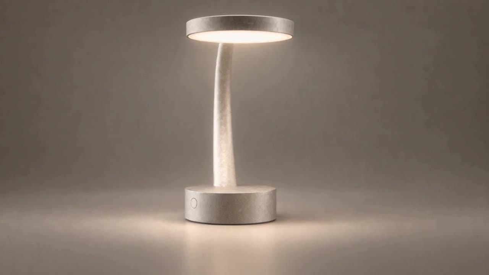
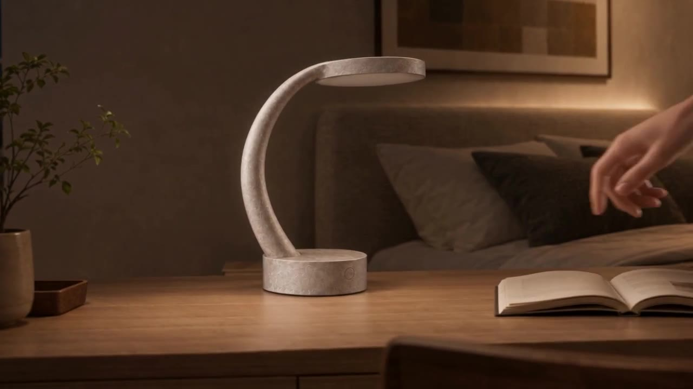
ERROR EXAMPLE
Orbit 클립 3초 지점 — C자 지지대가 곧은 기둥으로 바뀜
ERROR EXAMPLE
복합 지시 클립 — 손이 조작을 끝내지 않고 사라지고, 조명 변화가 누락됨
01
지지대가 휘거나 변형됨
02
헤드 두께가 달라짐
03
베이스 비율이 바뀜
04
버튼이 사라짐
05
새로운 부품이 생성됨
06
소재와 색상이 바뀜
영상이 자연스럽게 움직인다고 해서 제품 디자인이 정확한 것은 아닙니다.
24
PART 04 — Video Consistency & Refinement
형태를 확인한다
CHECK THE FORM
APPROVED
승인된 제품
VIDEO FRAME
영상 중간 프레임
01
Silhouette
02
Proportion
03
Curvature
04
Component Position
05
Head Thickness
램프 예시
원본에서는 하나의 C자형 지지대였지만, 영상 중간에 지지대가 두 개로 바뀌는 경우
수정 전략
움직임을 단순화하고 원본 이미지를 기준으로 다시 생성
25
PART 04 — Video Consistency & Refinement
CMF를 확인한다
CHECK THE CMF
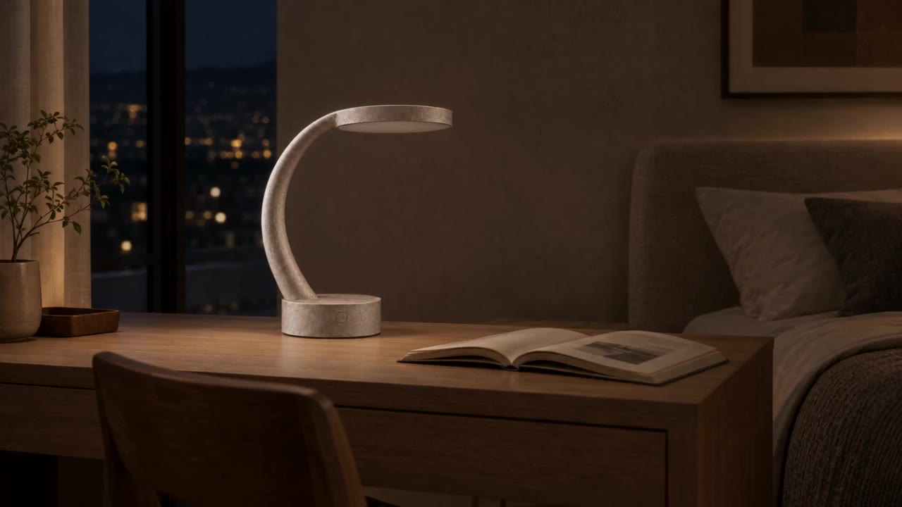
CLIP START
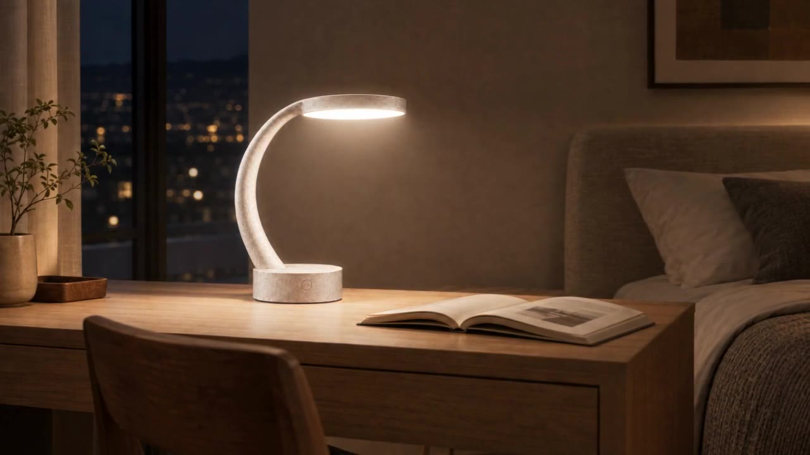
CLIP END
01
색상이 유지되는가?
02
금속 표면의 질감이 유지되는가?
03
조명 확산판의 표현이 자연스러운가?
04
조명 변화와 소재 변화가 구분되는가?
조명이 달라지면서 표면이 다르게 보일 수는 있지만, 제품의 소재 자체가 바뀌어서는 안 됩니다.
26
PART 04 — Video Consistency & Refinement
상호작용을 확인한다
CHECK THE INTERACTION
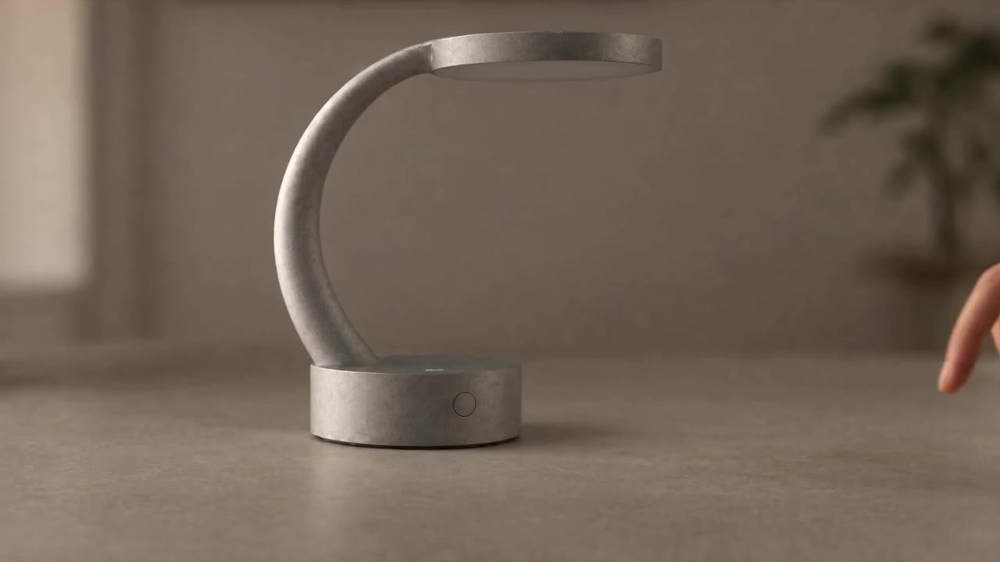
START
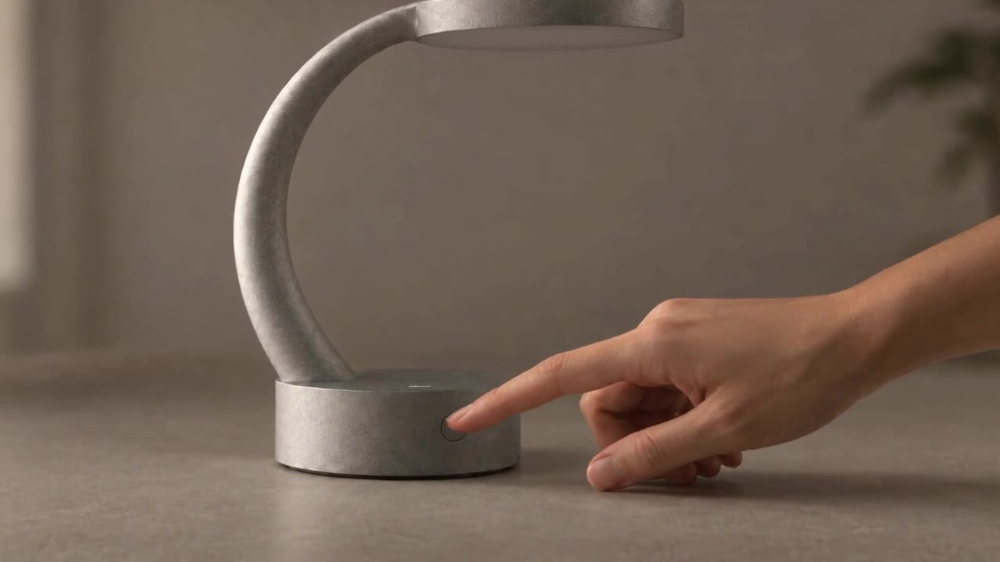
MIDDLE
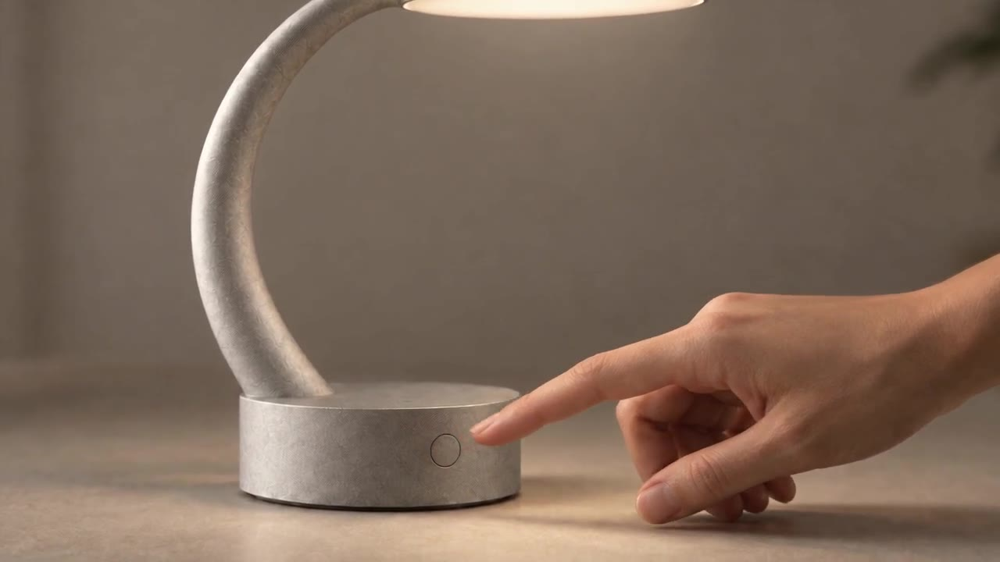
END
01
손가락 형태가 자연스러운가?
02
손이 제품을 통과하지 않는가?
03
조작부 위치가 유지되는가?
04
실제 설계한 조작 방식과 일치하는가?
05
사용자 행동과 제품 반응이 연결되는가?
수정 전략
손과 제품이 겹치는 장면을 단순화하거나 별도 컷으로 분리
27
PART 04 — Video Consistency & Refinement
클립을 다듬는다
REFINE THE MOTION
→
BEFORE
Orbit 중 C자 지지대가 곧게 펴짐
AFTER · REGENERATED
더 단순하고 느린 움직임으로 재생성
01 IDENTIFY
문제 구간 확인
02 CLASSIFY
형태 / 소재 / 상호작용 / 카메라
03 SIMPLIFY
움직임 단순화
04 REGENERATE
기준 이미지에서 재생성
05 COMPARE
원본과 수정 결과 비교
VIDEO PROMPT — REFINEMENT
Regenerate this shot
using the original product reference.
Preserve the exact lamp geometry,
C-shaped support curvature,
cylindrical base proportions,
and thin circular lamp head.
Keep the approved CMF and details.
Use a simpler, slower camera movement.
Do not morph or deform the product.
Do not invent new components.
Maintain consistent lighting
and realistic motion.
28
Practice 04
Video Refinement
가장 큰 오류를 찾아 고칩니다.
작성 절차
1. 생성된 클립 3개 검토
2. 가장 큰 오류 1~2개 선정
3. 오류 유형 분류
4. 움직임 또는 프롬프트 수정
5. 다시 생성
6. Before / After 비교
제출물
Refined Video Clips
+ Error Review
완료 기준
수정 전보다 제품 형태와
움직임의 일관성이
개선되어야 합니다.
29
PART 05 — Product Film Assembly
클립에서 영상으로
BUILD THE PRODUCT FILM
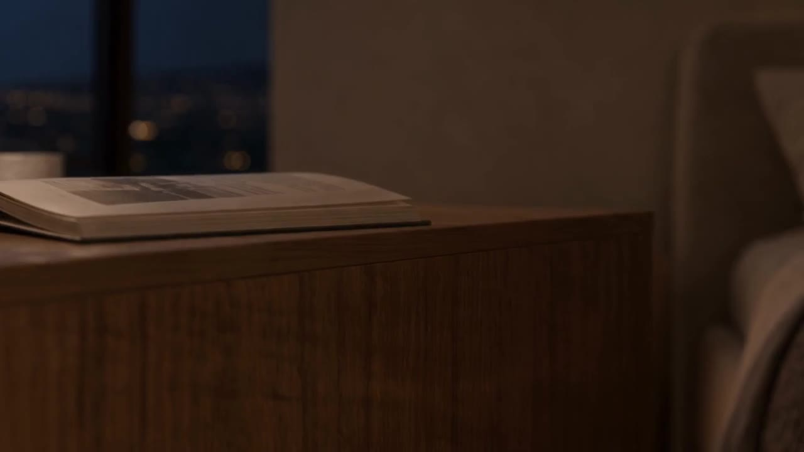
01
CONTEXT
사용 환경
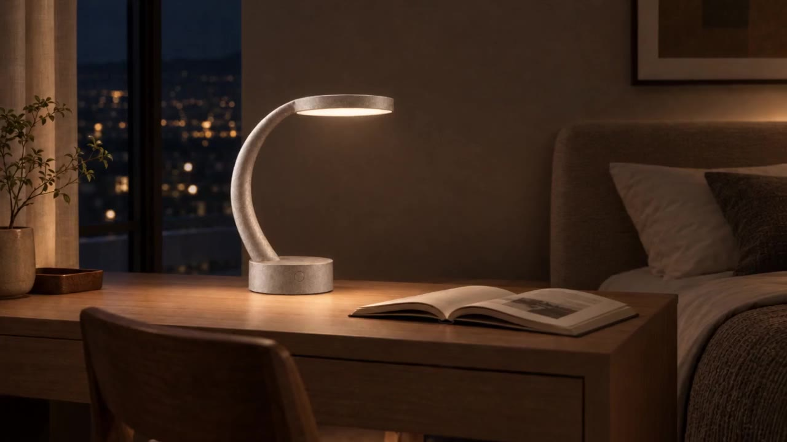
02
PRODUCT
제품 등장
03
INTERACTION
핵심 조작
04
RESPONSE
제품 반응
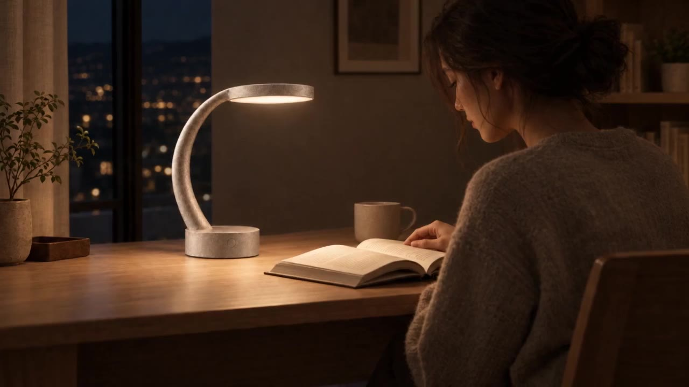
05
EXPERIENCE
사용 경험
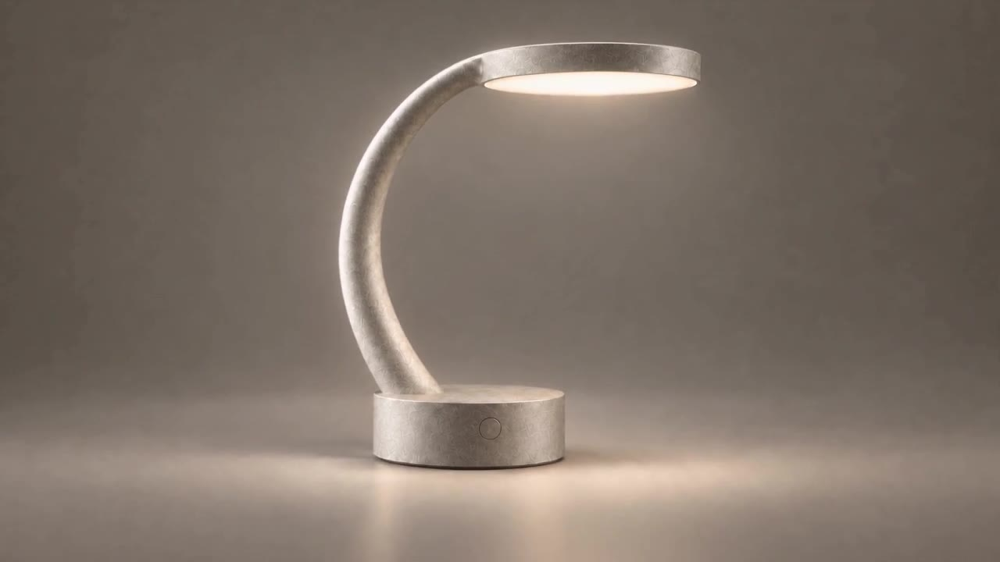
06
HERO
제품 마무리
예시 · 여섯 클립을 연결한 22초 제품 영상
영상의 목적은 제품의 사용 경험과 디자인 특징을 전달하는 것입니다.
30
PART 05 — Product Film Assembly
순서가 이해를 만든다
SEQUENCE MATTERS
상황
→
제품
→
행동
→
반응
→
경험
→
마무리
01
장면의 순서가 자연스러운가?
02
같은 정보를 반복하지 않는가?
03
핵심 기능이 명확하게 드러나는가?
04
제품의 특징이 충분히 전달되는가?
31
PART 05 — Product Film Assembly
리듬을 조절한다
CONTROL THE RHYTHM
01 Context
3초
02 Product
3초
03 Interaction
4초
04 Response
3초
05 Experience
5초
06 Hero
4초
01
Context
3초
02
Product
3초
03
Interaction
4초
04
Response
3초
05
Experience
5초
06
Hero
4초
합계
22초
모든 장면을 길게 보여줄 필요는 없습니다.
중요한 행동과 제품 특징에 시간을 배분합니다.
32
PART 05 — Product Film Assembly
이야기가 분명한가
IS THE STORY CLEAR?
01
제품 디자인 일관성
02
사용자 행동의 명확성
03
제품 반응의 자연스러움
04
장면 간 연결
05
영상의 길이
06
시각적 완성도
07
사용 경험의 전달력
강사 질문
"이 영상을 처음 보는 사람도 제품이 무엇이고 어떻게 사용하는지 이해할 수 있을까요?"
33
Practice 05
Product Film
클립을 연결해 15~30초 제품 영상을 완성합니다.
작성 절차
1. 최종 영상 클립 선정
2. 스토리보드 순서대로 배치
3. 불필요한 구간 제거
4. 장면 길이 조정
5. 컷 간 연결 검토
6. 최종 영상 완성
제출물
15~30초 Product Film
완료 기준
제품의 디자인 특징과
사용 경험을 짧은 영상으로
전달할 수 있어야 합니다.
34
PART 06 — Final Portfolio & Presentation
최종 포트폴리오
SHOW THE DESIGN PROCESS
WEEK 01 · EXPLORE
WEEK 02 · DEVELOP
WEEK 03 · REFINE
WEEK 04 · PRESENT
최종 포트폴리오는 완성된 이미지와 영상뿐 아니라 디자인 과정을 보여줘야 합니다.
좋은 결과물은 무엇을 만들었는지 보여줍니다.
좋은 포트폴리오는 왜 그렇게 디자인했는지도 설명합니다.
35
PART 06 — Final Portfolio & Presentation
아이디어에서 경험까지
FROM IDEA TO EXPERIENCE
WHO · PROBLEM · CONTEXT
Design Goal · Design Brief
01 PROJECT DEFINITION
제품 기획 · 문제 정의 · 사용자
02 CONCEPT DEVELOPMENT
러프 스케치 · 콘셉트 탐색
03 DESIGN REFINEMENT
형태 · 비율 · 사용성 개선

04 CMF & DETAIL
색상 · 소재 · 마감 · 디테일
05 PRODUCT VISUALIZATION
Multi-view · Detail · Hero
06 PRODUCT EXPERIENCE
시나리오 · 스토리보드
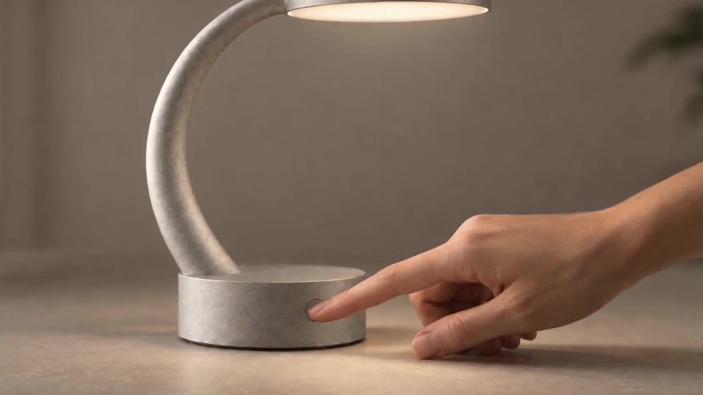
07 PRODUCT FILM
최종 영상
36
PART 06 — Final Portfolio & Presentation
결정의 이유를 보여준다
SHOW THE REASONING
01
어떤 문제를 해결하려 했는가?
02
어떤 디자인 방향을 선택했는가?
03
어떤 부분을 수정했는가?
04
왜 그 CMF를 선택했는가?
05
어떤 사용 경험을 의도했는가?
06
AI 결과를 어떻게 검토하고 수정했는가?
AI가 만든 이미지보다 학생이 내린 디자인 결정이 중요합니다.
37
PART 06 — Final Portfolio & Presentation
프로젝트를 발표한다
PRESENT THE PROJECT
01
Project Overview
02
Design Concept
03
Refinement Process
04
Final Product
05
User Experience
06
Product Film
07
Key Learnings
발표 가이드
01
핵심 디자인 목표를 명확하게 설명
02
과정과 결과를 연결
03
수정한 이유를 구체적으로 제시
04
영상의 목적과 전달하려는 경험 설명
05
AI 활용 중 생긴 문제와 해결 방법 공유
38
PART 06 — Final Portfolio & Presentation
프로젝트가 완성되었는가
IS THE PROJECT COMPLETE?
01
제품의 문제 정의가 명확한가?
02
1~4주차 결과물이 하나의 프로젝트로 연결되는가?
03
제품 형태와 CMF가 일관적인가?
04
디자인 수정 과정이 드러나는가?
05
사용자 경험이 명확하게 전달되는가?
06
영상이 제품의 핵심 특징을 보여주는가?
07
포트폴리오가 디자인 의사결정을 설명하는가?
학생 실습
최종 포트폴리오와 Product Film을 검토합니다.
39
FINAL · FINAL PRODUCT EXPERIENCE PORTFOLIO
FROM IDEA TO EXPERIENCE
WEEK 01 — EXPLORE
아이디어를 시각화하다.
WEEK 02 — DEVELOP
제품의 형태를 개선하다.
WEEK 03 — REFINE
제품의 디테일을 완성하다.
WEEK 04 — PRESENT
제품의 경험을 전달하다.
AI is a tool.
Design decisions are yours.
40